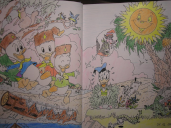

O mně
Jsem zvědavá a zajímám se o to, jak věci fungují. Nejsem kamarádka s teorií, ale praxe mi jde. Celkově se učím rychle. Mám za sebou kurz HTML a CSS, SEO - optimalizace webu.
Nyní si rozšiřuji znalosti z testování a programování na Udemy kurzech.
Pomalu se začínám připravovat na ISTQB Foundation level.
Ve volném čase objevuji krásy ČR při turistice. Někdy navštěvuji pochody KČT. Když mám chuť jdu si zaběhat do přírody nebo cvičím jógu a pilates. A pokud je čas a inspirace, tak kreslím.
